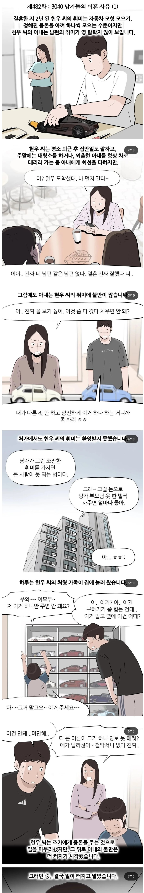
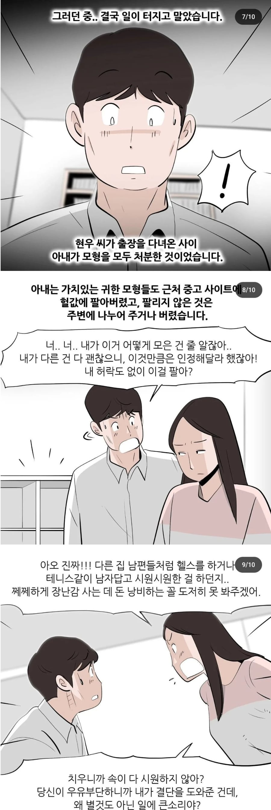

불펌도 걸리지 않냐 개붕아? 하필 실제 법조인이 주인공인 만화아냐?
내 유일한 취미인 fps(배필,콜옵).
밖으로 안돌아다니려고 일부러 컴퓨터도 최신으로 업글해 집에만 있었더니
최근에 꼴보기싫다는 소리들음.
나도 취미가 배그인데 겜한다고 하도 지랄해서 게임끊고 새취미로 낚시 생겼다고 주말마다 혼자 낚시 딱 한달가니까 집에서 배그해도 암말안함
취미로 낚시 골프 ㄱㄱ
난 진짜 내 여자친구랑 결혼 결심한게, 찡찡대는게 없음 진짜 그 특유의 전 여친들이 하던 생트집 잡아서 지랄하는것도 없고, 내가 게임을 하던 뭘하던 서로 인정해주고 배려해줌 겪어보니까 뭐가 맞고 안맞고가 보이더라
서브컬쳐나 특정 놀이(게임 포함) 좋아하는 사람은 동족끼리 만나야 행복이 무한대임
근데 여자가 관심이 없고 남자는 좋아해 이런 상화은
여자 인성(남자가 미친놈마냥 모으는 비정상적 상황 제외 ) 에 따라 갈리게 됨
남편 취미 깎아내리고 싫어하며 이유를만들어내는 가불기 하는 인성이면
절망이 무한대므로
관련 모임이나 뭐 집단생활 뭐든 해서 만나는 게 진짜 개이득임
인정함
아니면 진짜 마인드가 넓은 사람 만나야됨
지금 와이프가 게임 안좋아하고 흥미도 없는데
내가 퇴근하고 게임해도 암소리 안함
궁금해서 물어보니까
“엥? 취미인데 내가 뭘 뭐라해? 오빠는 내가 탁구좋아해서 내가 싫은적 없잖아?” 이런 반응이더라
시발 이게 당연한건데 ㅠㅠ
그럼 넌 인스타 평생 금지 폰 압수 쌍년아 피쳐폰 들고 다니셈
와 세상에
저런 개 씨발년이 다 있어????
이혼할만 하네
근데 내 주변에서는 서로 취미 잘 존중해주던데
저런 사례가 왕왕 있나보네
원래 자기 주변만 보고 판단하면 대부분 틀림
있음
내 전여친들이 저지랄해서 방생함
개붕이들도 관계 시작할 때 확실히 바운더리 정하고 시작해
저거 최근이 아니라 옛날부터 이혼 사유 1위임
그 이혼 관련 드라마 뭐였지 거기서도 나온적 있음 남편이 철도모형인가 뭐 모으는 사람인데
그거 아내가 꼴배기 싫다고 멋대로 처리
다른건 남편이 뭐 술인가 뭔가 모으는 사람인데 그거 꼴배기 싫다고 멋대로 처리
개헐값에 처리했는데 알고보니 그게 몇천~~ 억단위가 넘는 수집품이었고 프리미엄 붙은 세계에 몇개 없는 한정도 있었음(이런건 몇년만 지나도 개당 수천~억이 됨)
대부분 케이스가 아내는 결혼 하자마자 전업주부
가장 대표적인 사례가 게임기/게임수집가 남편 사례인데 이게 가장 케이스가 많다고 함
커뮤에서도 자주 소비되던 게임기 헐값처분 사례들
실제로 상대방 물건이나 그런거 멋대로 처분하거나 그걸로 갈등하는 경우 이혼사유가 확실하게 된다고 함
ㅋㅋ ㅂㅅ들 나처럼 돈안드는 수간물 보면되는데
미친년이랑 결혼한건 본인선택 아닌가. 스탑럴커는 뭐 교통사고 당했다 쳐야지
이래도 지랄 저래도 지랄
이기적인놈. 나라가 망해도 좋다 이거냐?
폐경 5년 앞둔 30중반 한국여자랑 결혼해서 시험관에 수천써서 장애아 낳을까 조마조마하며 아이 둘 낳고 용돈30으로 버텨가며 평생 주담대 갚고 사교육비에 탕진하다 노년에 이혼당해 전재산 다 뺏기고 70에 죽는게 진정한 행복이란 말이다
아무리생각해도 존나 행복하겠네
우에엥 혐오해줘
여자가 월천킥이고 남자가 뭐 최저시급 받는 사실상 펫이 아닌 이상 저런 걸 참을 이유가 하나라도 있나 ㅋㅋ
자지를 안박아서 그래.
자지박으면 꼼짝못해
남편도 박히면 꼼짝못한다는게 함정임
남자답게 음주 바카라 경마 취미를 가지라고
취미로 핍박받는 남자들아
취미를 낚시로 바꿔봐라
부인이 예전 취미로 돌아오길 바란다
이혼가야지 저러면
남자다운 취미를가져도 불만일게뻔함
헬스나 테니스나 축구등등 뭐든 제대로 하기시작하면
돈도들고 부상 체력관리등 저런취미보다 시간을 더 할애해야함